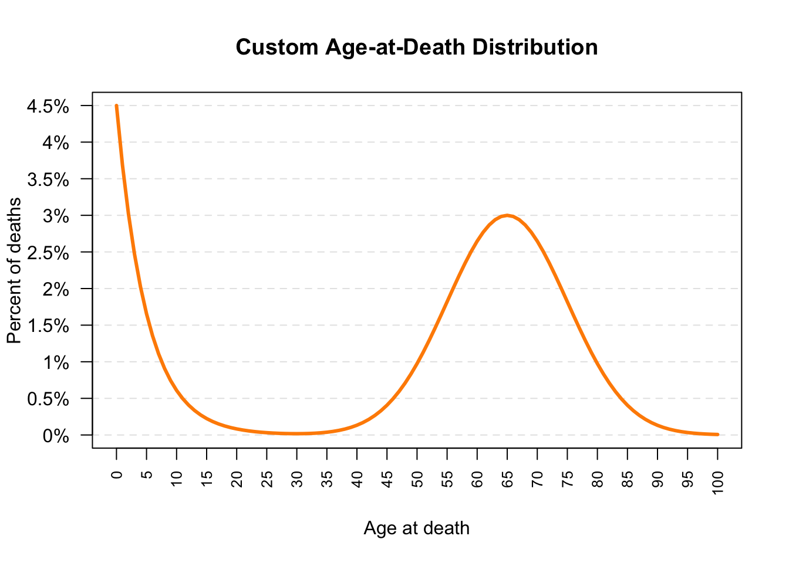
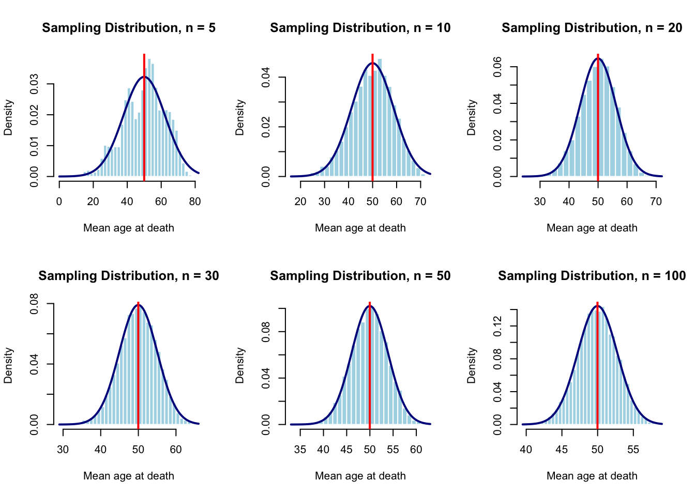
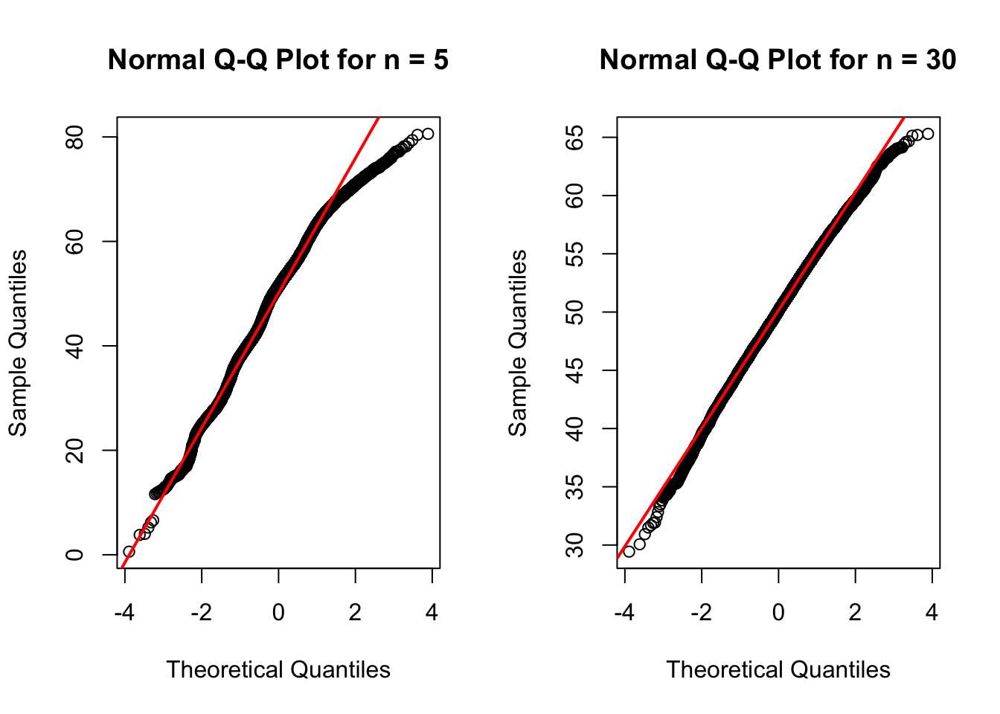

age <- 0:100Extra Credit: Custom Age-at-Death Distribution
1 1. Population Description
This is a custom discrete distribution for age at death. Possible ages range from 0 through 100.
The distribution has two main features:
- a high probability of death near age 0 that decreases rapidly;
- a second bell-shaped concentration centered near age 65.
This is a synthetic distribution created for simulation practice. It is not actual historical mortality data.
2 2. Prediction Before the Simulation
Before running the simulation, I predict that the sampling distribution of the mean will become approximately normal as the sample size increases.
Because the population distribution has two distinct features and is not symmetric, I expect smaller sample sizes to show more irregularity. I expect larger sample sizes to produce a more bell-shaped sampling distribution centered near the theoretical mean age.
3 3. Creating the Custom Population
3.1 Possible Ages
3.2 Early-Death Component
early_component <- 0.045 * exp(-age / 5)3.3 Adult-Death Component
adult_component <- 0.030 *
exp(
-0.5 * ((age - 65) / 10)^2
)3.4 Combining and Normalizing the Components
weight <- early_component + adult_component
probability <- weight / sum(weight)
percent <- 100 * probability
sum(probability)[1] 1sum(percent)[1] 100The probabilities should add to 1, and the percentages should add to 100.
3.5 Creating the Distribution Data Frame
death_distribution <- data.frame(
age = age,
probability = probability,
percent = percent
)
head(death_distribution, 10) age probability percent
1 0 0.044995773 4.4995773
2 1 0.036839423 3.6839423
3 2 0.030161568 3.0161568
4 3 0.024694204 2.4694204
5 4 0.020217904 2.0217904
6 5 0.016553020 1.6553020
7 6 0.013552467 1.3552467
8 7 0.011095822 1.1095822
9 8 0.009084492 0.9084492
10 9 0.007437756 0.7437756Each row represents one possible age and its probability.
4 4. Plotting the Custom Population
plot(
death_distribution$age,
death_distribution$percent,
type = "n",
xaxt = "n",
yaxt = "n",
ylim = c(0, 4.5),
xlab = "Age at death",
ylab = "Percent of deaths",
main = "Custom Age-at-Death Distribution"
)
abline(
h = seq(0, 4.5, by = 0.5),
col = "gray90",
lty = 2
)
axis(
side = 1,
at = seq(0, 100, by = 5),
las = 2,
cex.axis = 0.8
)
axis(
side = 2,
at = seq(0, 4.5, by = 0.5),
labels = paste0(
seq(0, 4.5, by = 0.5),
"%"
),
las = 1
)
lines(
death_distribution$age,
death_distribution$percent,
col = "darkorange",
lwd = 3
)
The population plot should show an early-life decline and a second peak near age 65.
5 5. Theoretical Characteristics
population_mean <- sum(
death_distribution$age *
death_distribution$probability
)
population_variance <- sum(
(
death_distribution$age -
population_mean
)^2 *
death_distribution$probability
)
population_sd <- sqrt(population_variance)
probability_under_20 <- sum(
death_distribution$probability[
death_distribution$age < 20
]
)
probability_60_or_older <- sum(
death_distribution$probability[
death_distribution$age >= 60
]
)
theoretical_summary <- data.frame(
statistic = c(
"Mean age at death",
"Standard deviation",
"Probability below age 20",
"Probability age 60 or older"
),
value = c(
population_mean,
population_sd,
probability_under_20,
probability_60_or_older
)
)
theoretical_summary statistic value
1 Mean age at death 49.9809755
2 Standard deviation 27.6345157
3 Probability below age 20 0.2436818
4 Probability age 60 or older 0.5329063The theoretical mean should be approximately (49.98), and the theoretical standard deviation should be approximately (27.63).
6 6. Simulation Design
6.1 Sample Sizes
I will investigate the sample sizes (n=5), (n=10), (n=20), (n=30), (n=50), and (n=100).
6.2 Number of Simulations
For each sample size, I will generate 10,000 repeated samples. Each sample will produce one mean age at death.
sample_sizes <- c(5, 10, 20, 30, 50, 100)
B <- 100006.3 Reproducibility
I used the last four digits of my student ID as the random seed.
student_id <- 6424
set.seed(student_id)7 7. Simulation Function
The following function generates random ages from the custom distribution.
rdeath <- function(n) {
sample(
x = death_distribution$age,
size = n,
replace = TRUE,
prob = death_distribution$probability
)
}The following function generates repeated samples and stores the mean age from each sample.
simulate_death_means <- function(n, B = 10000) {
replicate(
B,
mean(
rdeath(n)
)
)
}I first tested the function using (n=5).
test_sample_means_n5 <- simulate_death_means(
n = 5,
B = B
)
head(test_sample_means_n5)[1] 63.0 71.0 62.4 28.4 68.0 54.6length(test_sample_means_n5)[1] 100008 8. Simulation Results
8.1 8.1 Generating Sample Means for Each Sample Size
all_sample_means <- lapply(
sample_sizes,
function(n) {
simulate_death_means(
n = n,
B = B
)
}
)
names(all_sample_means) <- paste0("n_", sample_sizes)
sample_means_n5 <- all_sample_means[["n_5"]]
sample_means_n30 <- all_sample_means[["n_30"]]
sapply(all_sample_means, length) n_5 n_10 n_20 n_30 n_50 n_100
10000 10000 10000 10000 10000 10000 Each sample size should produce 10,000 sample means.
8.2 8.2 Comparison of Histograms Across Sample Sizes
old_par <- par(mfrow = c(2, 3))
for (n in sample_sizes) {
x <- all_sample_means[[paste0("n_", n)]]
hist(
x,
breaks = 30,
probability = TRUE,
main = paste("Sampling Distribution, n =", n),
xlab = "Mean age at death",
col = "lightblue",
border = "white"
)
curve(
dnorm(
x,
mean = population_mean,
sd = population_sd / sqrt(n)
),
add = TRUE,
col = "darkblue",
lwd = 2
)
abline(
v = population_mean,
col = "red",
lwd = 2
)
}
par(old_par)The blue curve is the theoretical normal approximation. The red line marks the theoretical mean.
8.3 8.3 Normal Q–Q Plots
old_par <- par(mfrow = c(1, 2))
qqnorm(
sample_means_n5,
main = "Normal Q-Q Plot for n = 5"
)
qqline(
sample_means_n5,
col = "red",
lwd = 2
)
qqnorm(
sample_means_n30,
main = "Normal Q-Q Plot for n = 30"
)
qqline(
sample_means_n30,
col = "red",
lwd = 2
)
par(old_par)Points that follow the reference line provide evidence that the sampling distribution is approximately normal.
8.4 8.4 Numerical Summary Across All Sample Sizes
summary_table <- do.call(
rbind,
lapply(
sample_sizes,
function(n) {
x <- all_sample_means[[paste0("n_", n)]]
data.frame(
sample_size = n,
theoretical_mean = population_mean,
simulated_mean = mean(x),
simulated_standard_error = sd(x),
theoretical_standard_error =
population_sd / sqrt(n),
skewness = mean(
(x - mean(x))^3
) / sd(x)^3,
excess_kurtosis = mean(
(x - mean(x))^4
) / sd(x)^4 - 3
)
}
)
)
summary_table sample_size theoretical_mean simulated_mean simulated_standard_error
1 5 49.98098 50.14888 12.282284
2 10 49.98098 49.91356 8.725479
3 20 49.98098 50.13229 6.156156
4 30 49.98098 50.02861 5.061025
5 50 49.98098 49.89340 3.936522
6 100 49.98098 49.97548 2.763446
theoretical_standard_error skewness excess_kurtosis
1 12.358531 -0.3727300 -0.23625262
2 8.738801 -0.2851528 -0.06989842
3 6.179266 -0.1757143 -0.07891127
4 5.045349 -0.1767284 0.02180401
5 3.908111 -0.1104824 -0.03941478
6 2.763452 -0.0663128 -0.095571379 9. When Did the Sampling Distribution Become Approximately Normal?
The sampling distribution became approximately normal at (n=30).
At (n=30), the histogram was approximately bell-shaped, and the Q–Q plot followed the reference line closely. The simulated mean was (50.0286), close to the theoretical mean of (49.9810). The simulated standard error was (5.0610), close to the theoretical value of (5.0453).
Therefore:
\[\boxed{n=30}\]
10 10. Why Did I Choose That Value?
I chose (n=30) because it was the first sample size that provided clear graphical and numerical evidence of approximate normality. The skewness was (-0.1767), and the excess kurtosis was (0.0218), both reasonably close to 0.
11 11. What Surprised Me?
I was surprised that the sampling distribution became approximately normal even though the origi nal population had two distinct features: an early-life decline and a second peak near age 65.
12 12. Conclusion
For the custom age-at-death distribution, the sampling distribution became approximately normal at (n=30). The histogram, Q–Q plot, simulated mean, standard error, skewness, and kurtosis all supported this conclusion.